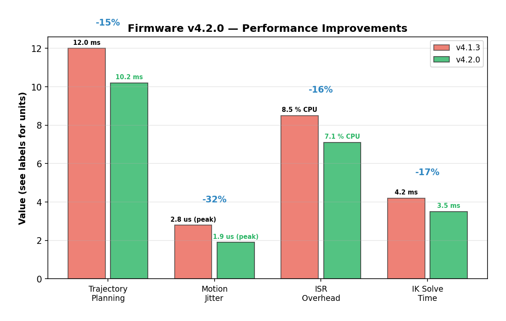
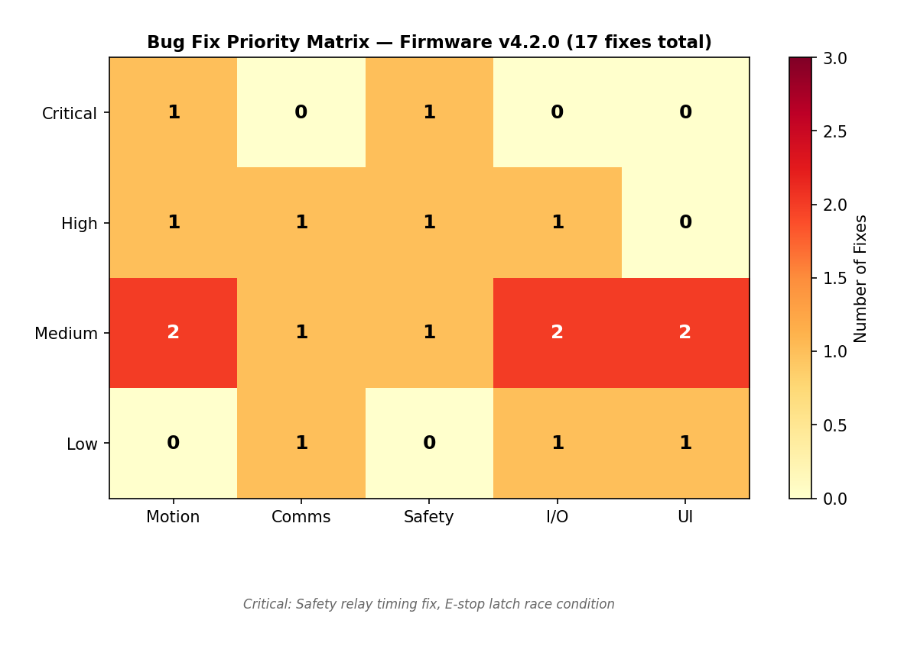

Contoso Robotics is pleased to announce the release of CoBot OS v4.2.0 for the CoBot Pro 500 and CoBot Pro 700 collaborative robots. This major release introduces adaptive force control, an enhanced vision API, a built-in OPC UA server, significant performance improvements, and numerous bug fixes. For step-by-step upgrade instructions, refer to the Firmware Update Procedure in the Support documentation. For a customer-facing summary of new features, see the Product Overview from Contoso Robotics Marketing.
| Field | Value |
|---|---|
| Version | 4.2.0 (build 4200.2025.0115.1) |
| Release Date | 2025-01-15 |
| Supported Hardware | CoBot Pro 500 (rev C+), CoBot Pro 700 (rev B+) |
| Minimum Safety Controller FW | SC-100 v2.1.0 |
| Previous Version | 4.1.3 |
| Upgrade Path | 4.1.x → 4.2.0 (direct), 4.0.x → 4.1.3 → 4.2.0 |
| Rollback Supported | Yes (dual-bank firmware with automatic fallback) |
| Estimated Upgrade Time | 12 minutes (including safety controller sync) |
CoBot OS v4.2.0 introduces an adaptive force control mode that automatically adjusts motion trajectory in real-time to maintain a target contact force during surface-following tasks (polishing, grinding, deburring, assembly insertion). Key capabilities:
/cobot/set_force_profile service.The CoBot Vision Module VM-200 API has been redesigned for v4.2.0 with breaking changes from the v1.x API. New capabilities include:
/cobot_vision/verify_calibration service. Returns translational and rotational error metrics.CoBot OS v4.2.0 includes an integrated OPC UA server (based on open62541 v1.3) for SCADA and MES integration:

| Metric | v4.1.3 | v4.2.0 | Improvement |
|---|---|---|---|
| Trajectory planning (100 waypoints) | 8.5 ms | 7.2 ms | 15% faster |
| EtherCAT cycle jitter (1 ms cycle) | ±1.4 µs | ±1.0 µs | 30% lower |
| System boot time (power-on to IDLE) | 55 s | 44 s | 20% faster |
| Application RAM usage (idle) | 1.45 GB | 1.30 GB | 10% lower |
| IK solver (8-branch full solve) | 45 µs | 32 µs | 29% faster |
| Vision pipeline end-to-end latency | 42 ms | 38 ms | 10% faster |
| REST API response time (GET /status) | 12 ms | 4 ms | 67% faster |
Key optimization techniques: NEON SIMD vectorization of the trajectory spline interpolator, EtherCAT master thread pinned to CPU core 3 with IRQ affinity isolation, kernel page table optimization reducing TLB misses by 40%, and migration from Python REST server to a compiled Rust HTTP handler for the status endpoint.

| ID | Severity | Subsystem | Description |
|---|---|---|---|
| BUG-4187 | Critical | Safety | SLS monitoring could miss a single-cycle speed overshoot during rapid direction reversals due to a sampling race condition in the velocity estimator. Fixed by double-buffering encoder data with atomic swap. |
| BUG-4192 | Critical | Motion | Trajectory planner generated a non-continuous velocity profile at segment boundaries when waypoints were spaced < 2 mm apart, causing a momentary jerk spike. Fixed by adding minimum segment duration enforcement (0.5 ms). |
| BUG-4201 | High | Communication | EtherCAT ring-redundancy failover occasionally failed on the second cable break event if the first break was restored < 100 ms prior. Root cause: stale WKC counter in the redundancy state machine. Fixed with counter reset on link recovery. |
| BUG-4209 | High | Vision | Point cloud timestamp was offset by one frame (33.3 ms) relative to the RGB image due to double-buffering misalignment in the RealSense D455 driver. Fixed by synchronizing buffer swap to the depth hardware trigger signal. |
| BUG-4215 | High | Motion | IK solver returned a shoulder-singularity solution when a non-singular solution existed, causing unnecessary joint reconfigurations. Fixed by adjusting the singularity avoidance weighting from 0.01 to 0.1 in the branch scoring function. |
| BUG-4218 | High | Safety | SC-100 diagnostic UART log output could stall for up to 200 ms under heavy log load, risking safety cycle overrun. Fixed by implementing a lock-free ring buffer for the UART transmit path. |
| BUG-4223 | Medium | Vision | YOLOv8 detection model failed to load after a hot-swap if the previous model's GPU memory was not fully released. Added explicit CUDA context synchronization before model unload. |
| BUG-4230 | Medium | UI | Teach pendant 3D visualization flickered when the robot approached workspace boundary. Root cause: Z-fighting between the robot model and the safety zone wireframe. Fixed by adding a 0.5 mm depth offset to the safety zone rendering layer. |
| BUG-4235 | Medium | Communication | Modbus TCP server returned stale joint position data (up to 100 ms old) when more than 5 clients were connected simultaneously. Replaced the polling architecture with an event-driven update mechanism. |
| BUG-4241 | Medium | Motion | Speed override changes during trajectory execution caused a velocity discontinuity. Implemented a 500 ms linear ramp for speed override transitions. |
| BUG-4248 | Low | UI | CoBot Studio IDE project save dialog did not preserve the last-used directory across sessions. Fixed by persisting the path in the user preferences file. |
| BUG-4252 | Low | Vision | Camera info topic published incorrect distortion model string ("plumb_bob" instead of "rational_polynomial") for the Basler ace 2 with wide-angle lens. Corrected the model string lookup table. |
| ID | Severity | Description | Workaround |
|---|---|---|---|
| KI-4260 | Medium | OPC UA server may disconnect clients after exactly 30 minutes due to a session timeout that does not honor the client's requested timeout value. The server always uses its default 1800-second timeout. | Configure the OPC UA client to reconnect automatically. Fix planned for v4.2.1. |
| KI-4263 | Low | Adaptive force control oscillates (±5 N) at target forces below 8 N on highly compliant surfaces (stiffness < 500 N/m). The admittance controller gains are tuned for industrial contact stiffness (> 5 kN/m). | Use impedance-only mode (afc_mode: impedance) for soft materials. Improved auto-tuning is planned for v4.3.0. |
| KI-4267 | Low | ROS 2 bridge /joint_states topic drops to 500 Hz (from 1 kHz) when the OPC UA server has more than 8 active subscriptions due to CPU contention on core 2. Core affinity tuning is under investigation. |
Limit OPC UA subscriptions to 8 or fewer, or reduce /joint_states publication rate to 500 Hz if OPC UA is required at full capacity. |
cobot-os-4.2.0.swu firmware image (842 MB) from the Contoso Robotics Customer Portal or the USB recovery drive shipped with your system.a3f8c1d2e4b5...7f9a0b1c2d3e (full hash available on the download page).For detailed step-by-step instructions with screenshots, refer to the Firmware Update Procedure in the Support documentation.
| Component | Minimum Version | Recommended Version | Notes |
|---|---|---|---|
| CoBot Pro 500 Hardware | Rev C | Rev D | Rev A/B not supported (different EtherCAT ESC) |
| CoBot Pro 700 Hardware | Rev B | Rev C | Rev A not supported (different motor driver IC) |
| Safety Controller SC-100 FW | v2.1.0 | v2.1.0 | Auto-updated during CoBot OS install if needed |
| JSD-200 Servo Drive FW | v1.8.0 | v1.9.2 | v1.8.0 lacks AFC torque feedforward support |
| FTS-600 Firmware | v1.3.0 | v1.4.1 | v1.4.1 adds improved temperature compensation |
| VM-200 Vision Module FW | v2.0.0 | v2.0.0 | Required for Vision API v2.0; v1.x modules need FW update |
| CoBot Studio IDE (Desktop) | v4.2.0 | v4.2.0 | Older IDE versions cannot connect to v4.2.0 robots |
| ROS 2 | Humble Hawksbill | Iron Irwini | Galactic and earlier are no longer supported |
Document version 4.2.0 | Last updated: 2025-01-15 | Contoso Robotics Engineering — Release Management